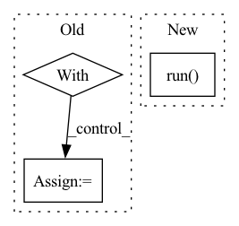

Pattern ID :10631
Before Change
logging.info(f"Using hyperparameters: {env.hparams}")
logging.debug(f"Using a test experiment config: {env.experiment_config}")
with local_execution_manager(context_path):
if not trial_class:
logging.debug("Loading trial class from experiment configuration")
trial_class = load.load_trial_implementation(env.experiment_config["entrypoint"])
controller = load.load_controller_from_trial(
trial_class=trial_class,After Change
rendezvous_info=rendezvous_info,
hvd_config=hvd_config,
)
controller.run()
checkpoint_dir.cleanup()
logging.info(
"Note: to submit an experiment to the cluster, change mode argument to Mode.CLUSTER"
)In pattern: SUPERPATTERN
Frequency: 3
Non-data size: 3
Instances Fragment ID: 36871284
Project Name: determined-ai/determined
Commit Name: 03270c0aafa01876b93c31eeb61b052807608307
Time: 2020-05-15
Author: shiyuan@determined.ai
File Name: harness/determined/experimental/_native.py
M Class Name: AnonimousClass
N Class Name: AnonimousClass
M Method Name: test_one_batch(4)
N Method Name: test_one_batch(3)
M Parent Class:
N Parent Class:
M File Name: harness/determined/experimental/_native.py
N File Name: harness/determined/experimental/_native.py
M Start Line: 432
M End Line: 466
N Start Line: 325
N End Line: 387
Before Change
preprocessed_deprioritize_text = embedding_model.preprocess(deprioritize_text)
embedding_deprioritize = embedding_model.embed(preprocessed_deprioritize_text)
with timer("sentences_conditioning"):
restricted_sentence_ids = filter_sentences(connection,
has_journal=has_journal,
date_range=date_range,
exclusion_text=exclusion_text)After Change
with timer("sentences_filtering"):
logger.info("Applying sentence filtering")
restricted_sentence_ids = (
SentenceFilter(connection)
.only_with_journal(has_journal)
.restrict_sentences_ids_to(indices)
.date_range(date_range)
.exclude_strings(exclusion_text.split())
.run()
)
with timer("considered_embeddings_lookup"):
logger.info("Constructing mask based on indices and sentence filtering")
mask = np.isin(indices, restricted_sentence_ids) Fragment ID: 36871290
Project Name: bluebrain/search
Commit Name: 6dbc2fe8f01adb39650da97fb8473111884cd0c1
Time: 2020-08-04
Author: francesco.casalegno@gmail.com
File Name: src/bbsearch/search.py
M Class Name: AnonimousClass
N Class Name: AnonimousClass
M Method Name: run_search(12)
N Method Name: run_search(12)
M Parent Class:
N Parent Class:
M File Name: src/bbsearch/search.py
N File Name: src/bbsearch/search.py
M Start Line: 210
M End Line: 221
N Start Line: 170
N End Line: 241
Before Change
def test_surface_native_error():
cmd = ["python3", utils.fixtures_path("tf_keras_runtime_error.py")]
with subprocess.Popen(cmd, stderr=subprocess.PIPE) as p:
err = p.stderr.read()
assert p.wait() != 0
if tf.executing_eagerly():
assert (After Change
trial_seed=0,
)
with pytest.raises(ValueError, match="incompatible"):
controller.run()
Fragment ID: 36871289
Project Name: determined-ai/determined
Commit Name: e7f3289627bda514dc6e70183def0a8ee282f327
Time: 2022-05-03
Author: rb@hpe.com
File Name: harness/tests/experiment/keras/test_tf_keras_trial.py
M Class Name: AnonimousClass
N Class Name: AnonimousClass
M Method Name: test_surface_native_error(0)
N Method Name: test_surface_native_error(0)
M Parent Class:
N Parent Class:
M File Name: harness/tests/experiment/keras/test_tf_keras_trial.py
N File Name: harness/tests/experiment/keras/test_tf_keras_trial.py
M Start Line: 373
M End Line: 390
N Start Line: 379
N End Line: 386